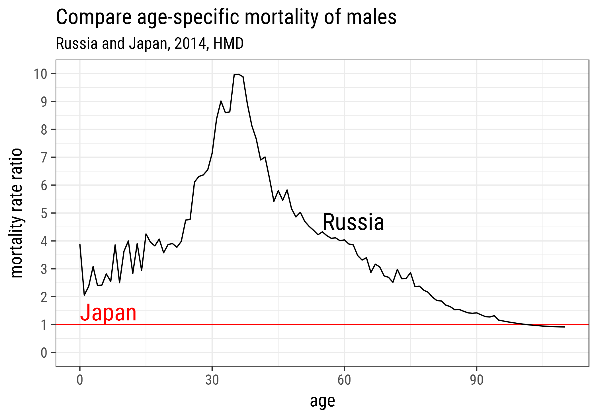

![]()
# load required packages
library(tidyverse) # version 1.0.0
library(HMDHFDplus) # version 1.1.8
# load life tables for men, RUS and JPN
rus <- readHMDweb('RUS', "mltper_1x1", ik_user_hmd, ik_pass_hmd)
jpn <- readHMDweb('JPN', "mltper_1x1", ik_user_hmd, ik_pass_hmd)Russia is sadly notorious for its ridiculously high adult male mortality. According to Human Mortality Database data (2010), the probability for a Russian men to survive from 20 to 60 was just 0.64 1. For women the probability is 0.87. This huge gender disproportion in mortality results in a peculiar sex ratio profile (see my old DemoTrends post and the previous blog post).
1 To compare, the same probabilities for males in some developed countries are: France (0.89), Japan (0.92), US (0.87), UK (0.91).
2 See for example the recent NIDI working paper of Balachandran et. al (2017).
Now let’s compare age-specific mortality rates of Russian men to that of the Japanese. For years and years Japan performs best in reducing mortality. It became standard to compare mortality schedules of other countries to the Japanese one 2.
First, I need to get HMD data for both Russian and Japanese males. Again, I am using the amazing R package HMDHFDplus of Tim Riffe to download HMD data with just a couple of lines of R code.
Use own credentials
Please note, the arguments ik_user_hmd and ik_pass_hmd are my login credentials at the website of Human Mortality Database, which are stored locally at my computer. In order to access the data, one needs to create an account at www.mortality.org and provide his own credentials to the readHMDweb() function.
Next, I select the most recent year for comparison, 2014, and compute the rate ratio of age specific mortality rates.
Finally, I plot the resulting rate ratio of male mortality in Russia and Japan.
# get nice font
library(extrafont)
myfont <- "Roboto Condensed"
# plot
gg <- ggplot(df, aes(age, ru_rate)) +
geom_hline(yintercept = 1, color = 'red') +
geom_line(aes(group=1)) +
scale_y_continuous('mortality rate ratio',
breaks = 0:10, labels = 0:10, limits = c(0, 10)) +
annotate('text',x=c(0, 55), y = c(1.75,5),
color = c('red','black'), hjust = 0, vjust = 1, size = 7,
label = c('Japan','Russia'), family = myfont) +
ggtitle('Compare age-specific mortality of males',
subtitle = "Russia and Japan, 2014, HMD")+
theme_bw(base_size = 15, base_family = myfont)
In the middle ages, male mortality in Russian is up to 10 times higher than in Japan!